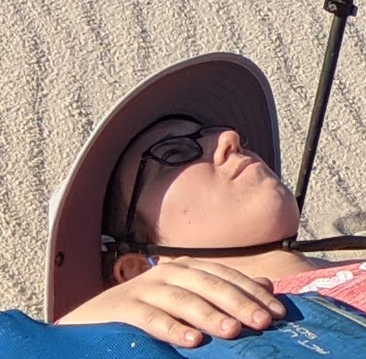

Sarah Scheffler
|  |
I'm just a humble professor tilling my Galois fields. |
{kind=link}
Are you interested in working with me?
If you are thinking about applying to work on your Ph.D. with me: Please apply to either CMU's Engineering and Public Policy Ph.D. Program (in the College of Engineering) or the Societal Computing Ph.D. program (in the School of Computer Science). The deadlines are typically in early-mid December. I usually reach out to students I am interested in interviewing to work with me in the early spring; I will probably not respond to any cold-emails you send me.
If you are a master's student or undergraduate already at CMU and are interested in conducting research with me, please send me an email with (1) your CV/resume, (2) your favorite privacy/security experience (a class you took, a project you did, etc.), (3) your major/year/program, (4) what your goals are in pursuing research (exploring? preparing to apply to further research positions? working on a master's thesis?), and (5) your approximate ideal workload (hours/week). I have found it helpful to do a "trial run" of research on the timescale of 4-8 weeks (similar to a class project) before we decide if you want to do research with me longer term. I can typically support undergraduates working for credit (a course) during the semester, and go through existing funded undergraduate research programs (e.g. REUSE) during the summer. It is very rare that I am able to fund undergraduate researchers long-term during the semester, but it does happen from time to time.
Have a privacy anecdote to share?
Every year I collect "privacy anecdotes" to share in a short talk at the Carnegie Library of Pittsburgh for Data Privacy Day in January! These are little short stories of things you think about, do, etc. that are privacy-relevant. I select some of the submitted anecdotes to read publicly at the event (credited or anonymously). If you want to submit one or more anecdotes, please submit them here: https://sarahscheffler.net/privacy-anecdotes-2025.
About me
I am an assistant professor at CyLab, Carnegie Mellon University's Security and Privacy Institute, studying at the intersection of cryptography and policy. I am jointly appointed between Software and Societal Systems (in the School of Computer Science) and Engineering and Public Policy (in the College of Engineering). If you are interested in joining me as a student in the Fall of 2024, please first poke around this page to see what kind of work I do, and apply to either department at CMU. (I can sometimes advise students outside of S3D or EPP; if you applied to a different department, please email me.) My ideal student has a strong background or interest in cryptography and its intersection with societal, legal, and policy issues.
I am a studying applied cryptographer working at the intersection of cryptography, privacy, policy, and law. My interdisciplinary work includes policy and technical analysis of end-to-end encrypted content moderation, compelled decryption, and privacy-preserving computation as applied to journalism, age verification, and more. I also do "pure" applied cryptography, including work on zero-knowledge proofs, multi-party computation, private set intersection, and hash combiners.
Formerly, I was a postdoctoral research associate at MIT's Internet Policy Research Initiative, and before that I was a postdoctoral research associate at Princeton University's Center for Information Technology Policy. I obtained my Ph.D. from Boston University in 2021, advised by Prof. Mayank Varia. During my time at BU, I was a Ph.D. student in the BUsec group, I organized the BUsec Seminar for security, cryptography, and privacy, as well as the Multi-Party Computation Reading Group, and I was an active member of the Cyber Security, Law, and Society Alliance.
Current Students
- Shuang Liu
Representative Publications
For all my publications, please see my Google Scholar profile.
SoK: Content Moderation for End-to-End Encryption
Sarah Scheffler, Jonathan Mayer
PoPETS 2023
Public Verification for Private Hash Matching
Sarah Scheffler, Anunay Kulshrestha, Jonathan Mayer
IEEE S&P 2023
TurboIKOS: Improved Non-interactive Zero Knowledge with Sublinear Memory
Yaron Gvili, Julie Ha, Sarah Scheffler, Mayank Varia, Ziling Yang, Xinyuan Zhang
ACNS 2021
Protecting Cryptography against Compelled Self-Incrimination
Sarah Scheffler, Mayank Varia
USENIX Security 2021
Case Study: Disclosure of Indirect Device Fingerprinting in Privacy Policies
Julissa Milligan, Sarah Scheffler, Andrew Sellars, Trishita Tiwari, Ari Trachtenberg, Mayank Varia
STAST 2019
From Soft Classifiers to Hard Decisions: How fair can we be?
Ran Canetti, Aloni Cohen, Nishanth Dikkala, Govind Ramnarayan, Sarah Scheffler, Adam Smith
ACM FAT* 2019
The Unintended Consequences of Email Spam Prevention
Sarah Scheffler, Sean Smith, Yossi Gilad, Sharon Goldberg
PAM 2018